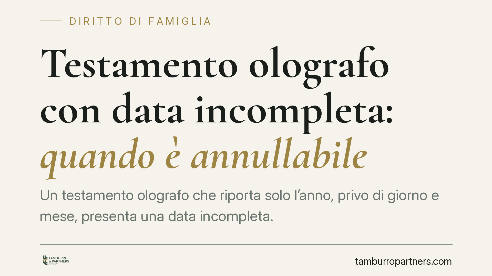

Testamento olografo con data incompleta: quando è annullabile
Un testamento olografo che riporta solo l'anno, privo di giorno e mese, presenta una data incompleta. La Cassazione ricorda che questo vizio rende l'atto annullabile, non nullo, e che comportamenti come l'accettazione dell'eredità o la pubblicazione notarile non lo sanano. Vediamo perché la data conta e come muoversi entro il termine di legge.

Il caso
Un testamento olografo — quello scritto, datato e firmato per intero a mano dal testatore — riportava soltanto l'anno di redazione. Mancavano il giorno e il mese. Gli eredi si sono chiesti se questa lacuna potesse far cadere l'atto e se i loro stessi comportamenti (accettazione, uso dei beni, denuncia di successione) avessero nel frattempo "convalidato" il documento.
Una recente pronuncia della Corte di Cassazione (estremi in corso di verifica redazionale) ha confermato l'orientamento consolidato: la data incompleta rende il testamento annullabile, e le attività meramente esecutive non equivalgono a convalida.
Inquadramento normativo
Occorre distinguere due regimi che spesso vengono confusi.
La nullità colpisce il testamento olografo privo di autografia (non scritto interamente a mano dal testatore) o privo di sottoscrizione. È un vizio radicale: l'atto è come se non esistesse.
L'annullabilità, invece, riguarda ogni altro difetto di forma, inclusa la data mancante o incompleta. Lo prevede l'art. 606, comma 2, c.c.: per i vizi formali diversi da autografia e sottoscrizione, il testamento può essere impugnato da chi vi abbia interesse, ma entro cinque anni dal giorno in cui è stata data esecuzione alle disposizioni testamentarie.
La data è richiesta dall'art. 602 c.c. e deve indicare giorno, mese e anno. Non è un formalismo: serve a due funzioni concrete. Primo, individuare quale sia l'ultima volontà quando esistono più testamenti, perché prevale il più recente. Secondo, verificare che al momento della redazione il testatore fosse capace di intendere e volere. Senza giorno e mese, entrambe le verifiche diventano impossibili.
Perché la convalida non scatta "da sola"
Un atto annullabile può essere convalidato da chi avrebbe diritto a impugnarlo, ma la convalida richiede una volontà consapevole di sanare quel preciso vizio, secondo i principi generali sull'atto annullabile (cfr. art. 1444 c.c. in materia contrattuale, applicabile per analogia).
Qui sta il punto pratico. Comportamenti come:
- l'accettazione dell'eredità;
- la pubblicazione del testamento presso il notaio;
- la presentazione della denuncia di successione;
- l'uso o il godimento dei beni ricevuti;
non integrano una convalida. Sono attività esecutive o fiscali, prive della manifestazione di volontà — chiara e cosciente del difetto — necessaria a rinunciare all'impugnazione. Chi accetta l'eredità o paga l'imposta di successione non sta dichiarando di voler tenere fermo un testamento che sa viziato: sta semplicemente amministrando la successione.
Un'ultima precisazione, per evitare un errore ricorrente. L'art. 590 c.c. — conferma ed esecuzione volontaria di disposizioni testamentarie nulle — non c'entra con il caso della data incompleta. Quella norma opera su un piano diverso, quello della nullità, e non è lo strumento per "sistemare" un vizio di annullabilità.
Implicazioni pratiche
Per chi redige un testamento olografo: la data completa non è un dettaglio. Un errore o una dimenticanza espone l'atto all'impugnazione per anni.
Per gli eredi che ritengono valido il testamento: sappiate che i vostri adempimenti ordinari non lo mettono al riparo. Se un coerede o un legittimario vuole impugnare, ha tempo cinque anni dall'esecuzione.
Per chi intende contestare: il vizio di data non è insanabile nel tempo. Superato il quinquennio, l'azione si prescrive e il testamento diventa definitivamente stabile.
Cosa fare in concreto
- Verifica la data su ogni testamento olografo che ti riguarda: controlla che siano presenti giorno, mese e anno, leggibili e non contraddittori.
- Calcola il termine: individua la data in cui è iniziata l'esecuzione delle disposizioni, perché da lì decorrono i cinque anni per impugnare.
- Non contare sull'inerzia: se sei erede e temi contestazioni, non presumere che accettazione e denuncia abbiano stabilizzato l'atto.
- Conserva la documentazione: verbale di pubblicazione, denuncia di successione e prova dell'avvio dell'esecuzione servono a ricostruire il decorso dei termini.
- Fai esaminare il testo per tempo: consigliamo di sottoporre il testamento a una verifica formale prima di assumere iniziative sulla successione.
---
Contributo informativo a cura di Tamburro & Partners Avvocati - Avv. Giuseppe Tamburro. Non costituisce parere legale.
Ogni famiglia ha il suo equilibrio.
Separazione, divorzio, affidamento, assegno: se vuoi un confronto riservato su una specifica situazione, scrivi allo studio. Ti rispondiamo entro un giorno lavorativo.